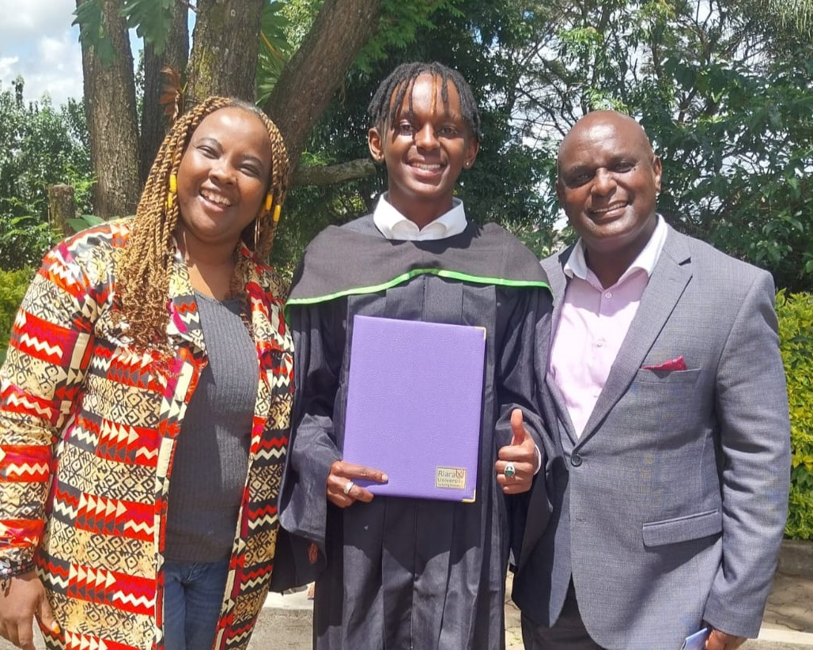

Academic Journey

-
Primary: St. Hannah's School,Nairobi (2012-2016)
Developed a strong foundation in academics and participated in football events.
-
Secondary: Agakhan Academy School (2017-2020)
Excelled in Computer, Physics and History. I joined the drama club and participated in very many events. Played for the school football team.
-
University: Diploma in IT, Riara University (2021–2024)
Pursued my diploma in Information Technology, focusing on web development,web networking, and data analysis among others.
Completed my Dipoma with a credit pass.
-
University: Bachelor in IT, Zetech University (Now–2026)
Currently pursuing a degree in Information Technology, focusing on software development, networking, and data analysis.
Achievements & Activities
- Graduated secondary school with a B Minus grade.
- Received a credit pass in Diploma at Riara University (74 points).
- Active member of university football and tech clubs.
- Participated in inter-school science and coding competitions.